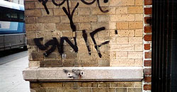
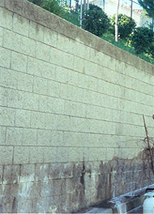

Mr. Squeegee Window Washing - Serving Portland, Oregon and surrounding areas Pressure Washing
Commercial Power/Pressure Washing
Exterior Power Washing has become one of our more popular services. Have your business exterior cleaned annually to keep it looking it's best. We can remove mold, mildew, dirt, and oxidation.
Because curb appeal is so important to any business especially retail businesses, it is very important to make sure that not only your sidewalk, but the building itself will look good. We conveniently schedule a clean time for your business after 8:30 p.m. for libability reasons.
- Mr. Squeegee Cleans
- • Homes
- • Roofs
- • Concrete Drives
- • Side Walks
- • Patios
- • Pool Areas
- • Privacy Fences
- • Decks
- • Mobile Homes
- • Complexes
- • Store Fronts
- • Gas Pads
- • Dumpster Pads
- • Restaurants
- • Docks
- • Live Stock Trailers
- Choose Mr. Squeegee Window Washing for cleaning the following:
- • Sidewalks
- • Water Recovery
- • Trash Enclosures
- • Buildings
Our motto is "We are not happy until you are happy."